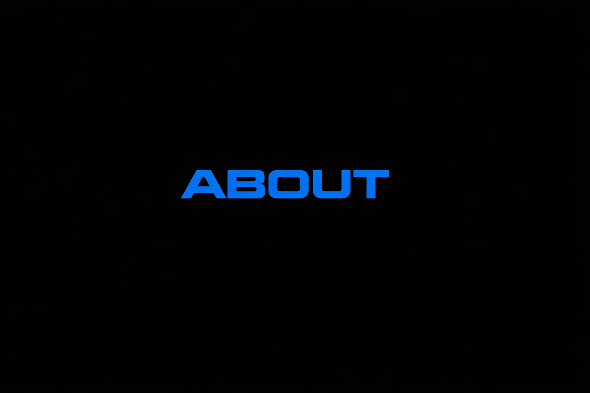

I'm Kenji, I'm currently a mechanical engineering student seeking to work in the aerospace industry. I seek great challenges to strengthen my engineering skills.
I have always been fascinated by excellent machines, by spaceflight, and by the idea of exploring beautiful new frontiers.
I work inward from fundamentals: physics and craftsmanship, honing these through a wide range of projects.
Feel free to reach out to me at SakaieK@proton.me
My resume can be viewed here
From September–December 2025, I worked as an engineering intern designing Ground Support Equipment (GSE) for Falcon 9.
I learned to define requirements, reason from fundamentals, and gained respect for the depth of mechanical engineering. As part of this internship, I:
At The Boring Company, I worked on upgrades of tunnel boring machines and development of hardware for a new machine. My tasks included:
K-Scale Labs was a startup which developed foundation models for humanoid robots, using a low cost, open source hardware platform for training. At K-Scale, I had the opportunity to design several humanoid robots.
K-Scale is no longer operating, but living and working with the team gave me a new appreciation for the challenges of running a startup, and for the power of software and hardware working in concert.
Jergens Manufacturing is a manufacturer in Cleveland which produces a variety of innovative tooling, custom fasteners and most famously, the ever-sastisfying Kwik-Lok pin. I had the opportunity to work at Jergens as a manufacturing engineering intern. I learned from engineers, CNC programmers and machinists alike about what goes into making quality parts in America.
Outside engineering, I study philosophy and history to understand what is worth building in the first place.
I am particularly interested in autonomous buildings and intentional communities, on Earth and beyond.
The Open Source Ecology Campus is the closest thing I've found the a reflection of this vision: